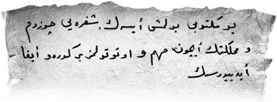

Burası oldukça karanlıktı, duvardaki meşaleleri yaktılar. Arkasını her dönen gördüğü manzara karşısında donup kalıyordu. Son derece büyük ve yüksek bir salon, belli ki Bizans döneminde yapılmış. Üst üste konulmuş lahitler, büstler, kocaman büyük heykeller, mumyalar, çok değerli oldukları her hâlinden belli olan çok eski el yazması kitaplar, sedef işli sandıklar, altın işlemeli taçlar ve büyük haritalar vardı.
Zafer,
— Bu ne yaaa?
— İnanılmaz bir müzenin içindeyiz, dedi Erim.
— Bunlar gerçekse müthiş bir arkeolojik buluşun tam ortasındayız, dedi Nisan.
Ortada, üzerinde altın kap içinde mektup olan mermer bir sütun fark ettiler. Mektubu açıp okumaya başladılar:
